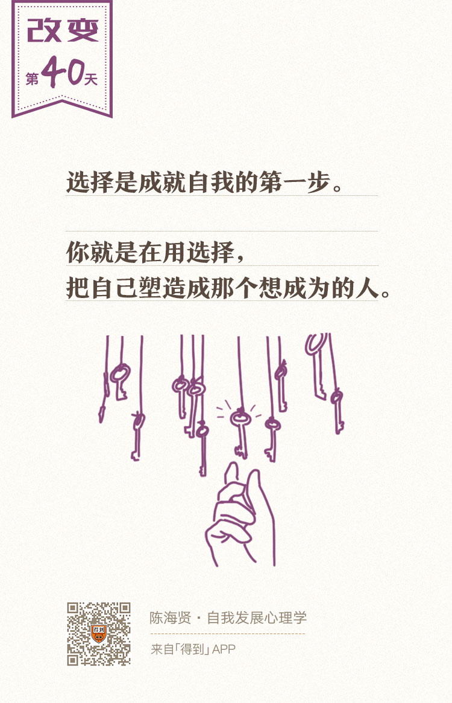

欢迎来到《自我发展心理学》。
你好，我是陈海贤。
上两节课，我们讲了工作和关系中的转变。几乎所有的转变，都会有一个讨价还价、新旧自我共存的时期。
- 该继续学业还是该放弃学业？
- 该在本行业深耕还是该转行？
- 该继续这份工作还是该辞职？
- 该继续这段关系还是该分手？
在转折期，这些选择都很让人纠结。
今天这节课，我想专门讲讲在工作和关系的转折期，我们应该如何选择。
经济选择还是心理选择？
其实，这是一个很难回答的问题，因为每个转折期遇到的具体抉择会非常不同。
从我的来访者、我身边的朋友，以及自己的转折经历，我总结出了选择的两个原则，想分享给你。
选择的第一个原则，是要想清楚我们究竟做的是经济选择，还是心理选择。
这是什么意思呢？我来说个例子解释一下。
曾有一个读者给我写信，说自己原来在一个小城市创业做英语培训。当工作步入正轨了，她就想：是该到杭州创业呢，还是继续在这个小城市工作？
到杭州呢，因为读书就在那里，有很多的朋友，自己也向往大城市的繁华和便利，但又担心大城市的压力和房价。待在原先的小城市呢，事业刚刚起步，步入正轨，工作也还轻松，但又很不甘心。
她不知道该怎么选择，因此来问我。
面对这样的选择，通常我们有两种思路。
一种思路，是把它当做一个经济选择。我们用经济学的模式来思考该怎么选择。
比如，我们会考虑风险、收益、机会、成本，各种利弊得失。需要说明一下，经济学的模型倒不一定只考虑经济的因素，它的核心特征是把各种好处和坏处做加减，然后进行比较。
在这样的决策模型中，我们想要的，就是怎么能获得更完备的信息，来准确地预测未来。
可是，这种决策模型也是有弊端的。
第一个弊端是，谁也没有足够的信息来预测未来。毕竟我们都是在信息不完备的情况下做出决策的。这也是我们困扰的原因。
第二个弊端是，在这样的模型中，其实你并没有做什么选择。你做的只是信息的计算和加工的工作。
换句话说，这样的选择是不需要“你”的，假如真有这样一个超级计算机，能对损失和收益的成本做精确的估算，任何人都能根据计算结果做出和你一样的选择：这就是比大小而已嘛。
另一种思路，我姑且称之为“心理选择”。在这种选择模型里，我们不再问将来可能的结果是什么，而是回到现在的选择本身。
如果我们把选择放到自我转变的背景上，把选择看作是不同自我的竞争，那我们就要想：每一个选择背后，那个可能的自我是什么？而我们自己，想要成为哪一个自我？
我发现，很多人在思考未来的时候，想的并不是经济上的得失。但是他们仍然会用经济选择的模型来思考。
我猜这可能是因为“成为什么样的人”这样的心理选择会比“我能挣多少钱”这样的经济选择要难一些。因为前一种选择，意味着更多责任，意味着在不确定的状况下，为自我负责的勇气。
选择真正的含义，是要用承担选择的后果来体现的。
对于成为什么样的人这样的选择，你是没有什么人可以依靠的。这很容易让人焦虑，所以我们才会想从这样的选择中逃开，用经济学模型去寻找一个确定的答案。
可是你要知道，选择就是成就自我的第一步，你就是在用自己的选择，把自己塑造成那个想成为的自己。除非你是从自我发展的角度，否则就很难真正理解选择。
所以，当我们在做选择的时候，要非常清楚自己究竟是根据什么做出的选择，是经济选择还是心理选择。只有这样，你才知道该选择什么。
环境还是自我创造？
你可能会问，那选择也要照顾现实啊。如果我的选择完全不顾现实，那我岂不是用幻想来逃避现实吗？
这就是我想说的选择的第二个原则：从自我创造的角度去思考选择，而不是从环境的可能性去思考选择。
让我来举个例子。
我还在浙大工作的时候，曾经遇到一个学生。他来找我，问我是不是该从学校退学。
他刚刚从本校保送博士，到一个很不错的实验室。可是到了这个实验室后，他发现导师平时都忙自己的项目，很少给予他指导，但是要求很高。实验室的师兄师姐们也不太友善，竞争很激烈。而且毕业也很难，师兄师姐经常有延迟毕业的现象。
他觉得压力很大，找一个师兄商量，师兄就说你要退学早点退，等到博二博三就更不合算了。找父母商量，父母当然是坚决反对。这时候他来问我该怎么办？
要不要退学，这并不是一个容易的选择。
如果我们从环境的角度去思考，不外乎两种选择：要么我顺从环境。我从小就是一个听话的、循规蹈矩的孩子，我觉得应该听话。要么我就反抗环境。既然老板和实验室让我不爽了，那我就应该离开。
或者，要么我能马上找到一个好工作，那我应该退学，既然我不知道自己要找什么工作，那我们就先忍着好好读。可是我们的内心还是很纠结的。
无论是顺从环境还是反抗环境，当我们这么思考的时候，我们都没有脱离开环境本身。这时候我们其实是在假设：
外在的环境是决定选择最重要的因素。当我们把选择的权力交给环境时，我们就没有在做心理的选择。这时候，你很容易被一种无力感淹没。
所以有时候，选择需要我们回归内心。
对于这个男生来说，该怎么做决策呢？
我觉得在这个时候，他不应该把这种犹豫当做选择的契机，而应该把它当做自我探索的契机。在这个时候，他最应该问的问题，并不是当前决策的各种利弊，而是我想要成为一个什么样的人。
自我的形成不是一个发现的过程，而是一个创造的过程。
就像你在画一幅画，你心里有关于这幅画的理念，这常常是很抽象的，你只有在一个个选择中，才能把它变成一个完整的现实。
如果我们用静止的思维想，也许我们会假设，冥冥之中已经有了两个完成的、不同的自我等待你去选择，或者有了两条已经形成的道路，一条比另一条更顺一些。
可是如果用过程思维去思考，你就会发现，自我的形成是一个完整的过程，你的选择，就是这个过程的第一步，也是创造自我的第一步。
而后面的很多步，要先等你走了这一步才会知道。
当你把选择放到自我形成的框架上，你跟原先选择的关系就不一样了。这并不是说，放到自我形成的框架上，你就不会犹豫了。
不是这样，决定仍然很艰难，但是你不会再被环境或者问题所支配了。
举上面的例子。
假如这个犹豫着要不要退学的学生将来的志向是要帮助非盈利组织做一些事情，实现助人的心愿，那他就需要思考：未来我要做的这个事情，需不需要博士学位，有这个博士学位会不会有更多帮助？
也许经过一番艰难的考量以后，他觉得不应该再读博士了，读博士没什么用，应该去积累一些社会工作的经验。那他就退学了。
或者，如果他觉得未来需要一个博士学位，那他继续读博士，都有可能。
当他这么思考的时候，有些事情已经有变化了：决定选择的力量不再来源于环境，而是他对自己未来的构想。不是环境让他做出这样的选择，而是他想成为的自己，让他做出这样的选择。
这时候，他跟这个选择的关系发生了变化。
首先，他的选择不再是环境的产物了。
不是我喜欢这环境我应该坚持，我不喜欢这环境我不应该坚持。相反，环境，哪怕是不利的环境，都成了自我创造需要面对的现实，需要克服的困难。这样它就成了整体图景的一部分了。
其次，在这样的框架下，我们对风险的感觉也不太一样了。
以前我们会把风险看作选择哪条道路的决定性因素——我们会在自己要的事情，和可能的风险之间寻找一个平衡。但如果我们把创造自我当做目标，那就没有风险这回事了。
曾有个人问我，自己拿到了一个工作的offer，也考上了研究生，不知道该怎么选择。
他说他想从事研究工作，但也担心放弃现在工作的offer，万一读完研以后找不到好工作，风险太大了。他对风险的觉知完全是根据两个选项的利弊来的。
但是，如果我们把选择放到自我创造的过程中，我们思考选择的方式就会不一样。这不是说我们就一定会选择读研，我们也可能选择先去工作。
但我们会这么考虑风险：我有没有足够的钱，来支撑我将来想要做的事业？
如果没有，那我还是可以先接受这个offer来挣钱，但我知道这不是因为我怕失去offer的风险，而是我的将来的事业需要钱的支持。
这时候，我们把风险当做了一个实现创造的条件，而不是最后的结果。
也就是说，如果我们坚定了选择的依据是自己要成为一个什么样的人，那么风险就不再是决定选择的因素，我们只会从它能否帮助我们实现自己的志向来考虑它。
总结一下，今天我们讲了在工作和关系的转折期中，你将如何面对选择。
我说了两个选择的原则：
第一，想清楚自己要根据什么做选择；
第二，从自我创造的角度去思考选择。
其实，有的时候，我们会遇到比工作或者关系的转折更严重的情况。在那种情况下，我们该怎么面对创伤经历，度过转变期呢？
我们下一讲就来讨论一下。
下一讲见。
